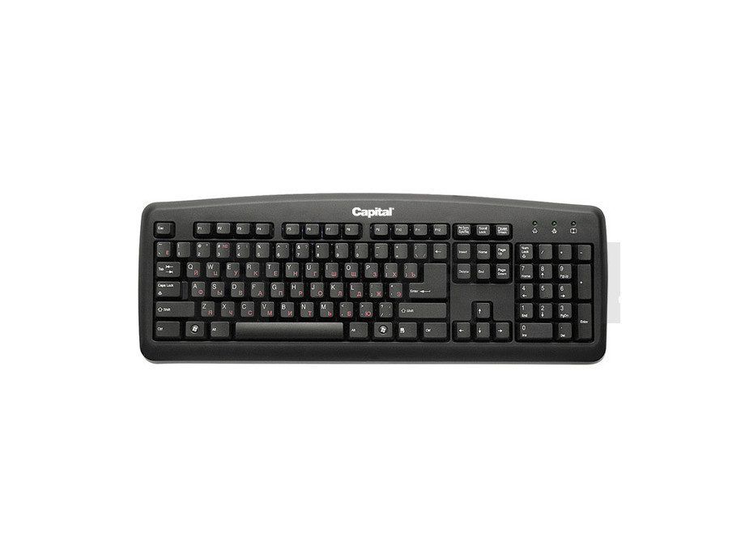
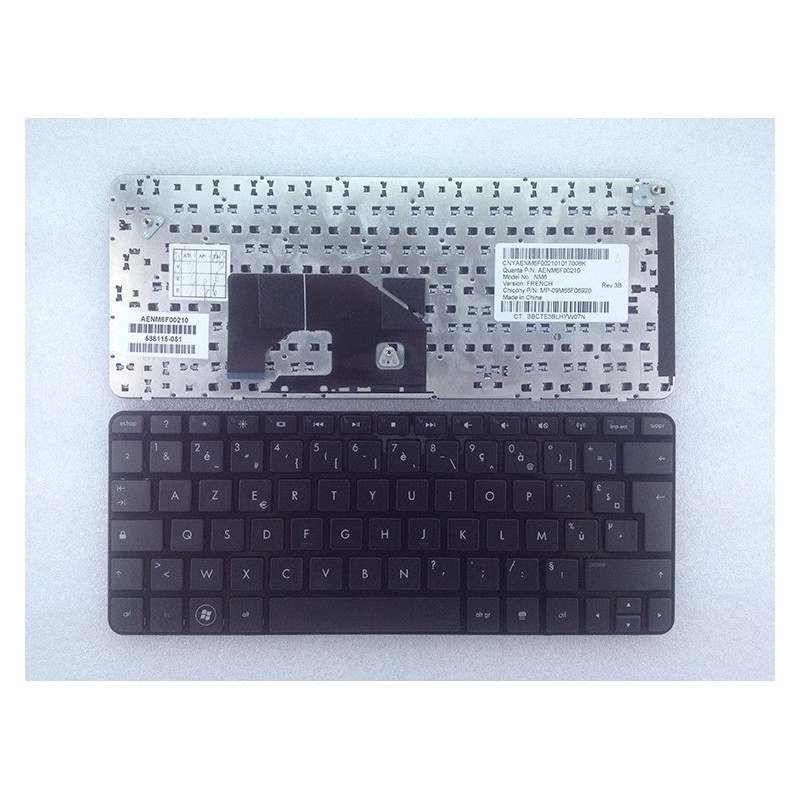
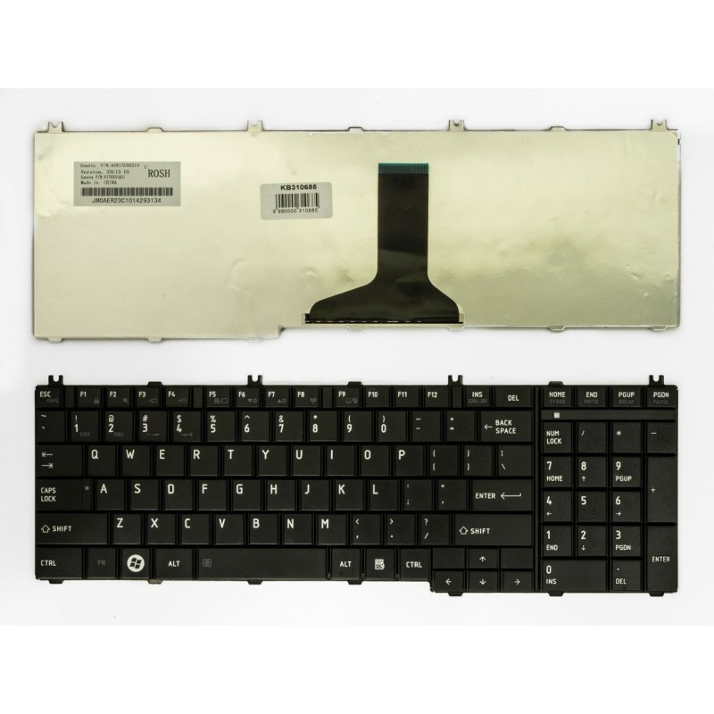

klaviatūra - išsamiai DELFI.lt
2020.10.30 03:18
Spalio 30 d., penktadienis | Vilnius 9 Kaunas 8 Klaipėda 11 Šiauliai 8 Panevėžys 9 Alytus 9 Nida 9 Raseiniai 7 Utena 9 Mažeikiai 8 Biržai 9 Kėdainiai 8 Kiti miestai Paieška | Pranešti naujieną | LT RU EN | Reklama Kontaktai | Statistika | + Apie Delfi plius Prisijungti Naujausios Skaitomiausios Lietuvoje Sportas Orai Kriminalai Užsienyje Veidai Horoskopai Gyvenimas Mokslas Verslas Daugiau Sveikata Kultūra Auto M360 Politiko akimis Jaunimas Pilietis Nuomonių ringas Multimedija Teisė Medijos Karas Propaganda PT Melo detektorius Demaskuok Ačiū už pamokas Temos | Delfi Video
Naujienos
Naujausios Skaitomiausios Lietuvoje Sportas Kriminalai Užsienyje Veidai GyvenimasVerslas Mokslas Kultūra Sveikata Auto Pilietis Miestai M360 Politiko akimis
Delfi Video
Tiesioginės transliacijos Delfi Diena Delfi Dėmesio centre LaidosNaudinga
Orai Horoskopai Receptai TV Programa Valiutų kursaiDelfi projektai
Multimedija Idėja Lietuvai Kablys Smalsūs EP Atsakingas požiūris Atgal į gyvenimąDelfi kanalai
Agro Būstas Moterys Šeima Kelionės Grynas Stilius Maistas Letena Karjera Bored Panda Sek DelfiMobilusis Delfi
Naujausios žinios Naujienų temos Delfi Temos klaviatūra
klaviatūra
Audrius Valotka. Kalbos kasdienybės. Kalbų technologijos kintančiame pasaulyje (35)
Kalbų technologijos be jokių atsiprašinėjimų negrįžtamai keičia mūsų gyvenimą. Ne ne, aš kalbu ne apie nuliukų ir vienetukų viešpatiją,...
Ausinės, kurios meta iššūkį bet kokiam aplinkos triukšmui – „Huawei FreeBuds Pro“ apžvalga (12)
Šiame pasaulyje yra garsų prieš kuriuos mes bejėgiai – lėktuvo turbinos, gatvės triukšmas ar tiesiog kartais taip pabostantis klaviatūros...
8 patarimai, kaip apsisaugoti nuo stuburo skausmų
Kiekvienais metais spalio 16-ąją minima Pasaulinė stuburo diena, skirta informuoti apie didžiulę stuburo skausmo bei negalios naštą visame...
Vaikai ir suaugę turėtų rašyti ranka: mokslininkai įrodė šio senamadiško metodo svarbų privalumą (6)
Mokyklose vis dažniau naudojamos elektroninės priemonės. O kodėl ne? Juk užaugę vaikai daugiau laiko praleis prie klaviatūros nei su rašikliu...
Dėmesingumo testas: ar per minutę pavyks identifikuoti paveikslėliuose įsivėlusias klaidas? (27)
Tik todėl, kad buvo neįtikėtinai dėmesingas, žymusis Šerlokas Holmsas sugebėjo išaiškinti nusikaltimus neturėdamas, atrodo, nė menkiausios...
Garsusis vokiečių elektroninės muzikos duetas „Dopplereffekt“ pirmą kartą koncertuos Lietuvoje
Lietuviai apibūdino svajonių kompiuterį: būtų valdomas mintimis ir neišsikrautų savaitę (5)
Kalbininkė Smetonienė turi ką pasakyti apie lietuvių raštingumą: jei būtume laiku griebę ožį už ragų, taip nebūtų (177) 344
5 svarbiausi dalykai įrengiant mokymosi vietą namuose (1)
Alfredas Chmieliauskas Jaunesnysis: Kembridžo analitika ir Silicio slėnio gyvenimas – sėkmė, sąmokslas ar sutapimas? (2)
Nešvariausios namų vietos, kuriose tyko daugiausia mikrobų: jas valyti turite itin atidžiai (1)
12 genialių būdų, kaip buityje panaudoti nagų lako valiklį (12)
Jūsų darbo vieta gali tapti bakterijų veisykla: patarimai, kaip kasdien pasirūpinti jos švara (9) 124
Po metų išmaniaisiais telefonais naudosis 1,78 mln. lietuvių: ar šalies verslas spėja su rinkos poreikiais? (14)
Tarpusavyje susietos technologijos – jau realybė: išbandyti galima su „Huawei MateBook X Pro“ (4)
Šie 7 daiktai mūsų namuose kaupia daugiausiai bakterijų (7)
Kadaise buvau savanoris. Svečiuose pas Kauno gynėjus
„Huawei MateBook X Pro“ apžvalga: sprendimas tiems, kurie nori daugiau galimybių (25)
„Huawei“ Lietuvoje pristatė nešiojamąjį kompiuterį: ką gero gausite už 2 tūkst. eurų (17)
„Huawei MatePad Pro“ apžvalga: subalansuotas kūrybingiems ir praktiškiems (4)
„Huawei“ Lietuvoje pristato naujieną – planšetę „MatePad Pro“ (2)
„Nissan“ sukūrė biurą elektromobilyje: tokį jau galima apžiūrėti ir Lietuvoje
Kaip tapti laimingam? Gabrielė Vilkickytė pataria: skausmą išgyvenkite, bet išgyvenkite jį švelniai
Po abiturientų egzamino Licėjaus direktorius neslepia nusivylimo: matau, kiek yra pridaryta absurdo (240) 103
Ką daryti, kad vaikas nesusigadintų regos: vadovaukitės 8 gydytojos taisyklėmis (7)
„Kai apakau – draugų nebeliko“: 30 kaulų lūžių patyręs neregys Egidijus apie sugebėjimą išgyventi (1)
6 gudrybės lengvesniam telefonų naudojimui: baterija veiks ilgiau, o akys pavargs mažiau (8)
Dar vienas būdas kontroliuoti darbuotoją: JAV kompanijos naudojasi be skrupulų, lietuviams teisininkė pataria to nedaryti (78)
Galingas, stilingas ir patikimas nešiojamasis kompiuteris žaidimų mėgėjams „ASUS TUF Gaming A15“ (17)
Kodėl šios klaviatūros kampe matome snaigės mygtuką? Kam jis skirtas? (3)
1 2 3 4 5 6 7 8 9 10 | Populiariausi straipsniai ir video Sekite DELFI REKLAMA KONTAKTAI PRIVATUMAS KARJERA en.delfi.lt ru.delfi.lt pl.delfi.lt delfi.ee rus.delfi.ee delfi.lv ru.delfi.lv UAB DELFI Gynėjų g. 16, 01109 Vilnius +37052045400 info@delfi.lt © 1999-2020 DELFI. Visos teisės saugomos .- klaviatūra - Vikižodynas
- klaviatūra - išsamiai DELFI.lt
- Klaviatūros Žaidimams, Darbui, Belaidės Bluetooth-USB Žema ...
- Klaviatūros - Internetinė parduotuvė 1a.lt
- Klaviatūros: žaidimų, belaidės, laidinės gera kaina | pigu.lt
- Lietuvybė.lt – Klaviatūros išdėstymai
- Rinkiniai (klaviatūra ir pelė) | Fortakas.lt
- Klaviatura Jūsų kompiuteriui | e-parduotuvėje RDE.LT
- Lietuviška ergonomiška klaviatūra :: LEKP
- Klaviatūros planšetiniams kompiuteriams
- klaviatūra - Vikižodynas
„Programuotojo“ veiksenoje klaviatūra turėjo veikti taip pat kaip įprasta amerikinė klaviatūra – jos išdėstymas buvo identiškas amerikiniam QWERTY išdėstymui. „Lietuviškojoje“ veiksenoje tose vietose, kur QWERTY klaviatūroje yra raidės Q, W ir X bei dauguma spec. simbolių, buvo sutalpintos savitosios lietuviškos raidės ...
- klaviatūra - išsamiai DELFI.lt
Pagalvokite, kokios spalvos klaviatūra jums patinka, šviesi, tamsi ar spalvota, kokia labiausiai tiks prie jūsų kompiuterio ar darbo vietos dizaino ir stiliaus. Galbūt norėsite papildomai įsigyti spalvotų klavišų dangtelių ir tokiu būdu patys susikurti klaviatūros stilių ir išvaizdą.
- Klaviatūros Žaidimams, Darbui, Belaidės Bluetooth-USB Žema ...
Ispanų kalba: nurodykite žodžio klaviatūra vertimą(-us) (Ispanų kalba), žr. Italų kalba: nurodykite žodžio klaviatūra vertimą(-us) (Italų kalba), žr. Japonų kalba: 鍵盤 (kenban) kinų mandarino kalba: nurodykite žodžio klaviatūra vertimą(-us) (Kinų mandarino kalba), žr.
- Klaviatūros - Internetinė parduotuvė 1a.lt
Klaviatūra būtina dirbant stacionariu kompiuteriu, tačiau gali suteikti daugiau komforto ir dirbant su nešiojamu kompiuteriu. Galite rinktis laidinę, belaidę arba belaidę klaviatūrą su Bluetooth technologija. Kompiuterinių žaidimų fanams siūlome pagalvoti apie specialiai žaidimams sukurtas klaviatūras, kurios leis dar efektyviau ...
- Klaviatūros: žaidimų, belaidės, laidinės gera kaina | pigu.lt
1. Klaviatūra – neatsiejamas kiekvieno kompiuterio aksesuaras. Itin patogios yra belaidės klaviatūros, kadangi jums netrukdys jokie kabeliai, o spausdinti tekstą galėsite patogiai įsitaisę ant krėslo arba sofos. 2. Kai kurios klaviatūros turi šviečiančius mygtukus.
- Lietuvybė.lt – Klaviatūros išdėstymai
Logitech ir kitų gamintojų rinkiniai (klaviatūra ir pelė) internetu pigiau. Prekes pristatome per 1-3 darbo dienas. Prekėms suteikiama gamintojo garantija.
- Rinkiniai (klaviatūra ir pelė) | Fortakas.lt
MIDI klaviatūra yra tai, ko ieškai? Soundium gali rinktis iš Arturia, Nektar, Native Instruments, Novation bei kitų vardų, turime tiek piniginei draugiškų, tiek profesionalioms studijoms skirtų MIDI klaviatūrų. Nepasimesk tarp klavišų - rinkdamasis pasinaudok mūsų MIDI klaviatūrų gidu.
- Klaviatura Jūsų kompiuteriui | e-parduotuvėje RDE.LT
Čia pateikiami visi straipsniai ir naujienos apie klaviatūra publikuoti DELFI.LT portale. Foto, video reportažai, komentarai, specialistų apžvalgos.
- Lietuviška ergonomiška klaviatūra :: LEKP
Klaviatūra yra vienas svarbiausių įrankių, kuriuo manipuliuodami bendraujame su kompiuteriu. Geras įrankis yra toks, kai darbas su juo aiškus ir natūralus. Tada jo tarsi nepastebime. Kokia turi būti kompiuterio klaviatūra, kad ji nekeltų papildomų rūpesčių, neblaškytų dėmesio?
- Klaviatūros planšetiniams kompiuteriams
Laidinė klaviatūra prijungiama dviem būdais - PS/2 arba USB jungtimis. Pagrindinis skirtumas - klaviatūroms su USB jungtimi (arba kompiuteriams be PS/2 jungties), reikia pasirinkti vieną iš kompiuterio USB jungčių.Pagrindinis privalumas naudojant laidinę klaviatūrą, tai patikimas naudojimas ir greitas prijungimas prie kompiuterio.
„Programuotojo“ veiksenoje klaviatūra turėjo veikti taip pat kaip įprasta amerikinė klaviatūra – jos išdėstymas buvo identiškas amerikiniam QWERTY išdėstymui. „Lietuviškojoje“ veiksenoje tose vietose, kur QWERTY klaviatūroje yra raidės Q, W ir X bei dauguma spec. simbolių, buvo sutalpintos savitosios lietuviškos raidės ...
Pagalvokite, kokios spalvos klaviatūra jums patinka, šviesi, tamsi ar spalvota, kokia labiausiai tiks prie jūsų kompiuterio ar darbo vietos dizaino ir stiliaus. Galbūt norėsite papildomai įsigyti spalvotų klavišų dangtelių ir tokiu būdu patys susikurti klaviatūros stilių ir išvaizdą.
Ispanų kalba: nurodykite žodžio klaviatūra vertimą(-us) (Ispanų kalba), žr. Italų kalba: nurodykite žodžio klaviatūra vertimą(-us) (Italų kalba), žr. Japonų kalba: 鍵盤 (kenban) kinų mandarino kalba: nurodykite žodžio klaviatūra vertimą(-us) (Kinų mandarino kalba), žr.
Klaviatūra būtina dirbant stacionariu kompiuteriu, tačiau gali suteikti daugiau komforto ir dirbant su nešiojamu kompiuteriu. Galite rinktis laidinę, belaidę arba belaidę klaviatūrą su Bluetooth technologija. Kompiuterinių žaidimų fanams siūlome pagalvoti apie specialiai žaidimams sukurtas klaviatūras, kurios leis dar efektyviau ...
1. Klaviatūra – neatsiejamas kiekvieno kompiuterio aksesuaras. Itin patogios yra belaidės klaviatūros, kadangi jums netrukdys jokie kabeliai, o spausdinti tekstą galėsite patogiai įsitaisę ant krėslo arba sofos. 2. Kai kurios klaviatūros turi šviečiančius mygtukus.
Logitech ir kitų gamintojų rinkiniai (klaviatūra ir pelė) internetu pigiau. Prekes pristatome per 1-3 darbo dienas. Prekėms suteikiama gamintojo garantija.
MIDI klaviatūra yra tai, ko ieškai? Soundium gali rinktis iš Arturia, Nektar, Native Instruments, Novation bei kitų vardų, turime tiek piniginei draugiškų, tiek profesionalioms studijoms skirtų MIDI klaviatūrų. Nepasimesk tarp klavišų - rinkdamasis pasinaudok mūsų MIDI klaviatūrų gidu.
Čia pateikiami visi straipsniai ir naujienos apie klaviatūra publikuoti DELFI.LT portale. Foto, video reportažai, komentarai, specialistų apžvalgos.
Klaviatūra yra vienas svarbiausių įrankių, kuriuo manipuliuodami bendraujame su kompiuteriu. Geras įrankis yra toks, kai darbas su juo aiškus ir natūralus. Tada jo tarsi nepastebime. Kokia turi būti kompiuterio klaviatūra, kad ji nekeltų papildomų rūpesčių, neblaškytų dėmesio?
Laidinė klaviatūra prijungiama dviem būdais - PS/2 arba USB jungtimis. Pagrindinis skirtumas - klaviatūroms su USB jungtimi (arba kompiuteriams be PS/2 jungties), reikia pasirinkti vieną iš kompiuterio USB jungčių.Pagrindinis privalumas naudojant laidinę klaviatūrą, tai patikimas naudojimas ir greitas prijungimas prie kompiuterio.
  